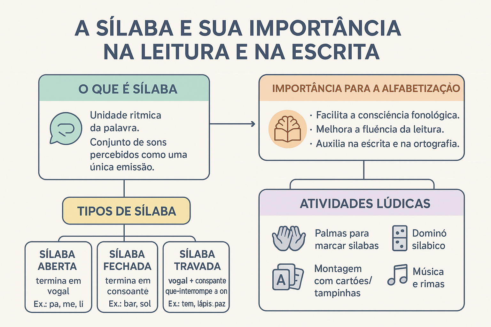

A Sílaba e Sua Importância na Leitura e na Escrita
A linguagem humana manifesta-se aos nossos ouvidos como uma torrente rítmica e expressiva de modulações sonoras. Ao escutarmos um enunciado em nossa língua materna, não discriminamos os sons como uma sequência fria e milimétrica de fonemas isolados; antes, percebemos a fala organizada em pequenos pulsos acústicos naturais que pulsam com regularidade motora e respiratória. Essa unidade rítmica primordial, que ancora a arquitetura dos sistemas fonológicos e norteia os passos iniciais da alfabetização infantil, é a sílaba.
Do ponto de vista fonético e fisiológico, a sílaba corresponde a um ciclo de tensão e descompressão da caixa torácica, associado a um pico balístico de abertura da cavidade bucal. Sob o olhar da Fonologia Estrutural, trata-se de um constituinte hierárquico rigidamente regido por princípios de sonoridade intrínseca. Na Língua Portuguesa, toda sílaba gravita obrigatoriamente em torno de uma e apenas uma vogal livre, que desempenha o papel soberano de núcleo silábico.
No campo pedagógico e cognitivo, a sílaba é o terreno onde se trava a virada decisiva da apropriação do Sistema de Escrita Alfabética (SEA). Como demonstram os estudos de Emilia Ferreiro, Artur Gomes de Morais e Magda Soares, a consciência silábica constitui a primeira grande hipótese metalinguística construída pela criança para compreender o valor das letras no papel, servindo de ponte insubstituível para a leitura fluente e o domínio da ortografia.
Neste artigo acadêmico, você explorará a arquitetura teórica da sílaba (ataque, núcleo e coda), a escala de sonoridade que regula a fonotaxe do português brasileiro, a tipologia funcional entre sílabas abertas e travadas, os desdobramentos psicogenéticos da consciência silábica na alfabetização, além de quadros comparativos de padrões silábicos, roteiros pedagógicos de intervenção, questões comentadas de exames educacionais e sínteses conceituais.

O estatuto linguístico da sílaba: pulso motor e sonoridade
Definir a sílaba sempre constituiu um desafio instigante para os linguistas, pois ela se situa na confluência exata entre a fisiologia motora e a abstração fonológica. O foneticista Luiz Carlos Cagliari sintetiza com clareza essa dupla natureza:
A sílaba como unidade rítmica fundamental
“A sílaba é um agrupamento de sons que o falante percebe como uma unidade rítmica dentro da palavra. Ela não é uma mera soma mecânica de letras, mas um pulso sonoro contínuo governado por um pico de energia vocal que o aparelho fonador emite num só golpe de ar expiratório” (CAGLIARI, 2002, p. 58).
Essa percepção intuitiva apoia-se no Princípio da Hierarquia de Sonoridade (PHS). De acordo com esse princípio universal, os segmentos fonéticos distribuem-se na sílaba segundo uma escala decrescente e crescente de abertura e amplitude acústica:
- As vogais ocupam o cume: apresentam a máxima abertura do trato vocal e a maior energia de ressonância, formando compulsoriamente o núcleo;
- As semivogais e líquidas ocupam as encostas: fones como [j], [w], [l] e [ɾ] exibem sonoridade intermediária, situando-se contíguos ao ápice vocálico;
- As oclusivas e fricativas ocupam a base: por envolverem bloqueios herméticos ou atritos ruidosos, fones como [p], [t], [k], [s], [f] situam-se nas margens externas da sílaba (ataque inicial ou coda terminal).
A arquitetura interna da sílaba no português
A fonologia contemporânea não representa a sílaba como uma linha plana e horizontal, mas como uma estrutura arbórea e hierárquica constituída por três elementos nodais:
Ataque (Onset)
Constitui a margem consonantal que antecede o núcleo vocálico. Pode ser:
- Ataque Simples: formado por uma única consoante (ex.: pa-to, me-sa);
- Ataque Complexo: formado por duas consoantes reunidas (uma oclusiva ou labiodental seguida de líquida /l/ ou /ɾ/), como em pra-to, blo-co, tre-vo;
- Ataque Vazio: quando a sílaba inicia diretamente pela vogal nuclear (ex.: a-mor, i-lha).
Rima Silábica: Núcleo e Coda
É a porção acústica mais pesada da sílaba, subdividindo-se em:
- Núcleo: o componente central obrigatório, exercido com exclusividade por uma vogal plena na língua portuguesa (ex.: pa-to);
- Coda: a margem consonantal opcional que encerra a sílaba após o núcleo vocálico, gerando travamento sonoro (ex.: mar, pas-ta, can-to, sol).
Tipologia das sílabas: abertas, fechadas e travadas
A presença ou ausência de uma consoante na coda determina a tipologia estrutural da sílaba, influenciando o ritmo da fala, a métrica poética e a precisão ortográfica:
- Sílaba Aberta (ou Livre): é a sílaba cuja rima é desprovida de coda, encerrando-se diretamente na vogal nuclear (ex.: pa-pe-li-no). Como aponta Lemle (2004), o português brasileiro possui marcante preferência estrutural por sílabas abertas, o que confere à nossa variedade linguística uma cadência rítmica marcadamente cantada e fluida;
- Sílaba Fechada (ou Travada): é a sílaba cuja rima possui uma consoante pós-vocálica na posição de coda (ex.: sol, bar, mes-mo, can-tor). A consoante terminal interrompe a ressonância livre da cavidade bucal, gerando uma sensação perceptiva de "fechamento" ou bloqueio acústico;
- Sílaba Complexa: denominação pedagógica dada às sílabas que fogem do arranjo canônico simples, contendo ataque composto (CCV como bra-ço) ou coda travadora (CVC como car-ta, CCVC como trans-por-te).
A preferência rítmica do português brasileiro
“A sensibilidade para identificar, manipular e refletir sobre sílabas constitui um passo importante no desenvolvimento da consciência fonológica. No português do Brasil, a tendência à sílaba aberta (Consoante-Vogal) é tão forte que a fala espontânea comumente desfaz sílabas travadas por meio da vocalização do /l/ em [w] (sol → [sɔw]) ou da epêntese vocálica (pneu → [piˈnew])” (MORAIS, 2012, p. 49; CÂMARA JR., 1970).
Padrões silábicos do português brasileiro
Embora o português admita múltiplos arranjos fonotáticos, a distribuição das sílabas no vocabulário obedece a frequências estatísticas bem estabelecidas:
| Estrutura Silábica | Denominação Fonotática | Exemplos no PB | Incidência e Observação Pedagógica |
|---|---|---|---|
| CV | Consoante + Vogal | bo-la, ca-sa, me-ni-no | Padrão Canônico Universal (mais de 60% do léxico): o primeiro a ser assimilado na alfabetização. |
| V | Vogal Isolada | a-ba-ca-xi, i-gre-ja | Núcleo pleno sem margens consonantais de ataque ou coda. |
| CVC | Consoante + Vogal + Consoante | mar, por-ta, pas-ta, ven-to | Sílaba Travada: a coda só admite no PB os arquifonemas /S/, /R/, /L/ ou /N/ nasal. |
| CCV | Encontro Consonantal + Vogal | pra-to, flu-xo, trei-no, cla-sse | Ataque Complexo: exige refinamento motor e costuma ser fonte de omissões infantis (pato por prato). |
| VC | Vogal + Consoante de Coda | ár-vo-re, es-co-la, al-to | Sílaba travada com ataque inicial vazio. |
| CCVC | Ataque Complexo + Núcleo + Coda | pran-cha, trin-co, trans-por-te | Sílaba Máxima: a mais complexa do ponto de vista articulatório e ortográfico. |
A armadilha tradicional das famílias silábicas mecânicas
Durante décadas, a alfabetização tradicional pautou-se na memorização exaustiva do "ba-be-bi-bo-bu" em cartilhas desprovidas de significado real. Como adverte Magda Soares (2020), o trabalho com sílabas é indispensável, contudo não deve se restringir à repetição maquinal de sílabas canônicas isoladas. A consciência silábica precisa emergir da reflexão sobre palavras contextualizadas em cantigas, parlendas e textos vivos, explorando intencionalmente o contraste entre sílabas simples (CV) e sílabas complexas (CCV, CVC) para que a criança não fique bloqueada diante de estruturas não canônicas.
A centralidade da Consciência Silábica na Alfabetização
Para a criança pequena em fase pré-escolar, a sílaba é a unidade de maior saliência acústica e perceptiva. Ao contrário dos fonemas individuais — que são coarticulados em frações imperceptíveis de segundo —, cada emissão silábica corresponde a um movimento respiratório e a um ciclo de abertura da boca evidente aos olhos e aos ouvidos do aprendiz.
Por essa razão cognitiva, a consciência silábica precede obrigatoriamente a consciência fonêmica no desenvolvimento infantil:
- A Descoberta da Hipótese Silábica: ao refletir sobre a fala, a criança descobre primeiro que as palavras são compostas por pedaços orais discretos (sílabas), formulando a genial hipótese de que a cada "pedaço falado" deve corresponder uma letra no papel (FERREIRO; TEBEROSKY, 1999);
- Automação e Fluência Leitora: leitores fluentes não decodificam letra por letra; o cérebro humano alfabetizado agrupa os grafemas em blocos silábicos consolidados na memória (denominados chunks fonológicos). O domínio dos padrões silábicos permite decodificar com rapidez, liberando a memória de trabalho para a compreensão textual (SOARES, 2020);
- Prevenção de Dificuldades Ortográficas: a segmentação silábica consciente impede que o estudante aglutine palavras indevidamente na escrita (hipersegmentação e hipossegmentação, como escrever "agente" por "a gente" ou "com migo" por "comigo").
Roteiro metodológico: como trabalhar a consciência silábica
A intervenção didática focada no desenvolvimento da consciência silábica deve ser metódica, reflexiva e prioritariamente lúdica. O esquema a seguir orienta a progressão das atividades pedagógicas:
Etapas do roteiro de estimulação da consciência silábica
- Segmentação corporal e motora: marcar a emissão de cada sílaba por meio de palmas, batidas de pés, passos ou toques no corpo (ex.: pronunciar ca-der-no realizando 3 palmas);
- Contagem e quantificação silábica: classificar palavras do cotidiano quanto à extensão (monossílabas, dissílabas, trissílabas e polissílabas), superando o realismo nominal;
- Síntese e fusão silábica oral: o professor emite sílabas espaçadas (ex.: "ja... ne... la") e os alunos realizam mentalmente a junção, identificando o vocábulo "janela";
- Identificação e isolamento de sílaba inicial e final: jogos de caça a palavras que começam com a mesma sílaba (ex.: ma-caco, ma-la, ma-pela) ou que terminam com a mesma sílaba (rimas silábicas);
- Manipulação, transposição e subtração silábica: desafios de retirar ou inverter sílabas para criar novas palavras (ex.: "Se tirarmos a sílaba final de 'sapato', o que sobra?" → sapa; ou inverter "lo-bo" → bo-lo);
- Articulação explícita com letras móveis: montagem de palavras organizando as letras em pequenos montes correspondentes a cada sílaba, evidenciando o núcleo vocálico de cada bloco.
Exemplo prático de análise aplicada: a transição das hipóteses de escrita
Situação psicogenética em análise
Mariana, estudante de 6 anos no ciclo de alfabetização, é solicitada a escrever quatro palavras em uma sondagem diagnóstica: BOLA, PIPOCA, PRATO e PASTA.
Produção escrita observada
BOLA: B L A ou O A
PIPOCA: P P K ou I O A
PRATO: P A T O (omissão do 'R' medial)
PASTA: P A T A (omissão do 'S' na coda)
Diagnóstico fonético-pedagógico
Nas palavras formadas exclusivamente por sílabas canônicas (CV como bola e pipoca), Mariana manifesta plena estabilidade da consciência silábica, conseguindo registrar as sílabas com perfeição.
Contudo, diante de sílabas complexas como PRA (ataque CCV) e PAS (coda travada CVC), a aluna sofre a influência da restrição do padrão canônico preferencial do PB. Como o cérebro da criança assume tacitamente que cada sílaba deve ter apenas uma consoante e uma vogal, ela apaga a segunda consoante do ataque (escrevendo pato) e suprime a coda travadora (escrevendo pata).
Intervenção pedagógica orientada
O professor não aplica punição nem correção ortográfica mecânica. Em vez disso, propõe jogos de contraste auditivo e visual com letras móveis:
1. Compara oralmente e por escrito: PATO versus PRATO, mostrando que a inserção do 'R' faz a língua tremer e muda o sentido do termo;
2. Desafia Mariana a prolongar o som sibilante na palavra PASTA [paaaasss-ta], fazendo-a perceber que há um ruído de chiado antes de tocar no 'T'.
Resultado
Ao compreender que as sílabas podem ter estruturas internas diferenciadas (ataque complexo e coda fechada), Mariana supera as omissões e consolida a alfabetização alfabética e ortográfica de forma autônoma.
Questões para estudo e reflexão
Questão 1
(Concurso Público / Pedagogia e Letras) Sob a perspectiva da teoria fonológica moderna, quais são os três constituintes que formam a estrutura interna hierárquica da sílaba e qual deles é estritamente obrigatório na língua portuguesa?
Ver resposta comentada
Resposta comentada: A estrutura hierárquica da sílaba organiza-se em Ataque (Onset), Núcleo e Coda (sendo o Núcleo e a Coda agrupados sob o constituinte da Rima). Na língua portuguesa, o único constituinte estritamente obrigatório é o Núcleo, preenchido compulsoriamente por uma vogal plena. O ataque e a coda são constituintes facultativos, de modo que uma sílaba pode prescindir de consoante inicial (ex.: a-mor) ou de consoante final (ex.: pa-to), mas jamais pode existir sem vogal nuclear.
Questão 2
(PAES UEMA / Linguística) A sílaba canônica da língua portuguesa é descrita pela fórmula Consoante-Vogal (CV). De que maneira fenômenos fonéticos cotidianos do português brasileiro, como a epêntese em advogado [adʒivoˈgadu] e a vocalização em jornal [ʒoʁˈnaw], confirmam a preferência do falante pelo padrão da sílaba aberta?
Ver resposta comentada
Resposta comentada: Ambos os fenômenos são estratégias fonéticas e biomecânicas espontâneas empregadas pelos falantes para evitar codas complexas ou travadas e restabelecer o padrão canônico da sílaba aberta (terminada em vogal livre). Em advogado, para desfazer a oclusiva em coda interna /d/, o falante insere a vogal epêntica [i], transformando uma sílaba travada CVC em duas sílabas abertas perfeitas CV (a-dji-vo-ga-do). Em jornal, a consoante lateral alveolar travadora /l/ transforma-se na semivogal labiovelar [w], convertendo a coda consonantal pesada em um ditongo vocálico decrescente mais fluido e aberto.
Questão 3
(ENEM / Psicologia da Educação) Por que, no percurso da psicogênese da língua escrita estudado por Emilia Ferreiro, as crianças constroem a hipótese silábica muito antes de atingirem a hipótese alfabética?
Ver resposta comentada
Resposta comentada: Porque a sílaba possui saliência fisiológica, motora e acústica direta e natural, correspondendo a um pulso de emissão aéreo-muscular facilmente isolado pelo aparelho auditivo e corporal da criança. O fonema individual, ao contrário, é uma unidade abstrata que não existe isolada na fala cotidiana, encontrando-se fundido em coarticulação contínua com os fones adjacentes. Portanto, perceber que a palavra tem sílabas é cognitivamente muito mais acessível do que decompor a sílaba em fonemas isolados.
Questão 4
(Concurso Professor de Educação Básica) Durante o processo de alfabetização, é muito comum que crianças escrevam "pato" em vez de "prato" e "fata" em vez de "festa". A que se devem essas omissões típicas e como o professor deve intervir pedagogicamente?
Ver resposta comentada
Resposta comentada: Essas omissões decorrem da complexidade fonotática das sílabas não canônicas: o ataque complexo CCV (prato) e a coda travada CVC (festa). A criança, operando sob o modelo mental preferencial da sílaba simples CV, tende a simplificar a estrutura motora omitindo a consoante líquida do ataque ou a consoante sibilante da coda. O professor deve intervir por meio de reflexão metafonológica comparativa (contrastando pares como pato/prato e fata/festa com apoio de letras móveis, palmas e prolongamento do som), sem recorrer a punições ortográficas estéreis.
Questão 5
(Mestre Kira / Didática do Letramento) De acordo com Magda Soares em sua obra Alfaletrar, de que maneira o desenvolvimento da consciência silábica contribui diretamente para a conquista da fluência leitora autônoma?
Ver resposta comentada
Resposta comentada: O domínio da consciência e dos padrões silábicos permite que o leitor iniciante abandone a decodificação letra por letra (lenta e truncada) e passe a processar a leitura por meio do reconhecimento automatizado de blocos silábicos consolidados na memória visual e fonológica. Essa leitura em "pedaços silábicos" acelera a taxa de decodificação e reduz a sobrecarga da memória de curto prazo (memória de trabalho), liberando a capacidade cognitiva do estudante para o que é essencial: a atribuição de sentido e a compreensão global do texto.
Resumo sobre a Sílaba na Leitura e na Escrita
- A sílaba é a unidade rítmica fundamental da fala, correspondendo a um pulso motor de emissão de ar centrado em um pico de sonoridade;
- A estrutura interna da sílaba organiza-se hierarquicamente em Ataque (consoantes iniciais), Núcleo (vogal livre obrigatória) e Coda (travamento final);
- Na Língua Portuguesa, toda sílaba gravita obrigatoriamente em torno de uma e apenas uma vogal nuclear (não existe sílaba sem vogal);
- Classifica-se em sílaba aberta (ou livre, terminada em vogal) e sílaba fechada (ou travada, terminada em consoante de coda);
- O português brasileiro apresenta forte preferência rítmica e fonotática pelo padrão canônico Consoante-Vogal (CV);
- A consciência silábica antecede naturalmente a consciência fonêmica devido à alta saliência acústica e motora das sílabas;
- Desempenha papel fulcral na evolução psicogenética da escrita infantil, impulsionando a passagem da hipótese pré-silábica à alfabética;
- A prática pedagógica deve superar o silabário mecânico das cartilhas tradicionais, integrando o estudo das sílabas a jogos lúdicos e ao letramento real.
Perguntas frequentes sobre a Sílaba
O que é uma sílaba sob o ponto de vista fonético e fonológico?
Sob o ponto de vista fonético e motor, a sílaba é um pulso de ar expelido pelos pulmões associado a um pico de sonoridade e abertura do trato vocal. Sob o ponto de vista fonológico, é uma unidade hierárquica e rítmica constituída obrigatoriamente por um núcleo vocálico em torno do qual se organizam margens consonantais (ataque e coda).
Como é formada a estrutura interna da sílaba na teoria fonológica?
A sílaba organiza-se em dois constituintes principais: o Ataque (Onset), que abriga as consoantes iniciais antes do ápice sonoro, e a Rima. A Rima subdivide-se no Núcleo (ocupado obrigatoriamente por uma vogal livre) e na Coda (ocupada por consoantes travadoras ou semivogais que encerram a sílaba).
Qual é a diferença entre sílaba aberta (livre) e sílaba fechada (travada)?
Sílaba aberta (ou livre) é aquela que termina diretamente em vogal, sem consoante na coda (como pa e me). Sílaba fechada (ou travada) é aquela cuja rima contém uma consoante pós-vocálica na coda que interrompe o fluxo desobstruído do ar (como mar, sol, lápis e paz).
Por que o português brasileiro tem preferência estrutural por sílabas abertas?
O português brasileiro herdou da evolução românica uma forte preferência pela sílaba canônica Consoante-Vogal (CV). Na fala espontânea, essa tendência é tão acentuada que o falante brasileiro frequentemente vocaliza a lateral pós-vocálica (ex.: sol soa como [sɔw]), insere vogal epêntica em grupos consonantais mudos (ex.: ritmo soa como [ˈhitʃi.mu]) ou apaga o R final infinitivo (ex.: falar soa como [faˈla]).
Por que a consciência silábica se desenvolve antes da consciência fonêmica na criança?
Porque a sílaba tem alta saliência acústica e motora: ao falar, cada pulso expiratório e cada abertura de boca correspondem naturalmente a uma sílaba, facilmente perceptível em palmas e cantigas. O fonema individual, ao contrário, é abstrato e nunca é emitido isolado na fala real, exigindo instrução formal explícita associada ao alfabeto.
Como o domínio dos padrões silábicos melhora a fluência leitora?
Quando a criança domina os blocos silábicos, ela deixa de decodificar letra por letra de forma truncada e passa a reconhecer agrupamentos silábicos inteiros em "pedaços" automatizados (chunks fonológicos). Isso reduz a sobrecarga da memória de trabalho, permitindo que a atenção do leitor se concentre na compreensão do significado do texto.
Quais são as sílabas não canônicas que costumam gerar erros na alfabetização?
São as sílabas complexas com encontros consonantais no ataque (CCV, como pra-to, blo-co) e as sílabas travadas por coda consonantal (CVC, como pas-ta, por-ta, can-to). Crianças acostumadas ao padrão canônico CV tendem a omitir a consoante intermediária (escrevendo pato para prato) ou a consoante travadora (escrevendo pata para pasta).
Qual é a crítica ao uso mecânico do silabário das cartilhas tradicionais?
As cartilhas tradicionais tratavam a sílaba como mera repetição mecânica descontextualizada (ba-be-bi-bo-bu), sem relação com textos reais ou com o letramento social. A moderna didática da alfabetização defende que o trabalho com sílabas deve ser lúdico, reflexivo e articulado a textos vivos da cultura infantil (cantigas, parlendas, listas e jogos com letras móveis).
Considerações finais
A sílaba estabelece-se como o nó vital que conecta a acústica biofísica da fala humana às estruturas simbólicas da escrita alfabética. Ao converter o fluxo sonoro contínuo em unidades rítmicas tangíveis, a organização silábica fornece à mente infantil o primeiro andaime cognitivo sobre o qual se ergue a compreensão do código alfabético e a posterior autonomia da leitura interpretativa.
Para educadores, fonoaudiólogos e pesquisadores da linguagem, o domínio da fonotaxe silábica do português brasileiro — desde o reconhecimento da soberania do núcleo vocálico até a manipulação de ataques complexos e codas travadas — afasta abordagens pedagógicas mecanicistas e estéreis, fundamentando uma prática alfabetizadora viva, cientificamente sólida e profundamente comprometida com a formação de leitores críticos e fluentes.
Conteúdos relacionados
- Consciência Fonológica: o som como base da alfabetização
- Relação entre Fonema e Grafema na Língua Portuguesa
- Classificação dos Sons da Fala: consoantes e vogais na Fonética e na Fonologia
- Classificação Fonética Detalhada das Vogais
- Introdução à Fonética: o que é, para que serve e como se relaciona com a fonologia
- Fonética e Estudo dos Sons da Fala — Índice de Conteúdos
Referências
- CAGLIARI, Luiz Carlos. Alfabetização e Linguística. 10. ed. São Paulo: Scipione, 2002.
- CÂMARA JR., Joaquim Mattoso. Estrutura da Língua Portuguesa. 46. ed. Petrópolis: Vozes, 1970/2011.
- COLLISCHONN, Gisela. A sílaba em português. In: BISOL, Leda (Org.). Introdução a estudos de fonologia do português brasileiro. 4. ed. Porto Alegre: EDIPUCRS, 2008.
- CRISTÓFARO-SILVA, Thaïs. Fonética e Fonologia do Português: roteiro de estudos e guia de exercícios. 11. ed. São Paulo: Contexto, 2012.
- FERREIRO, Emilia; TEBEROSKY, Ana. Psicogênese da língua escrita. Porto Alegre: Artmed, 1999.
- LEMLE, Miriam. Guia teórico do alfabetizador. 16. ed. São Paulo: Ática, 2004.
- MORAIS, Artur Gomes de. Consciência Fonológica na Educação Infantil e no Ciclo de Alfabetização. Belo Horizonte: Autêntica, 2019.
- MORAIS, Artur Gomes de. Sistema de Escrita Alfabética. São Paulo: Melhoramentos, 2012.
- SOARES, Magda. Alfabetização: a questão dos métodos. São Paulo: Contexto, 2016.
- SOARES, Magda. Alfaletrar: toda criança pode aprender a ler e a escrever. São Paulo: Contexto, 2020.
Explore Outros Conteúdos
Continue seus estudos acessando outras seções do site Mestre Kira: